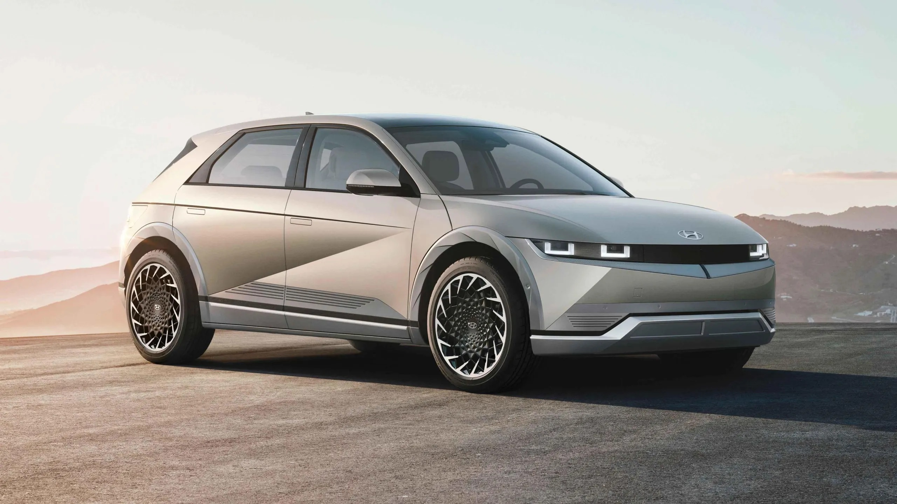

<ion-header class="ion-no-border">
  <ion-toolbar color="secondary">
    <ion-buttons slot="start">
      <ion-back-button text=""></ion-back-button>
    </ion-buttons>
  </ion-toolbar>
</ion-header>

<ion-content class="gradiante ion-text-center">
  <div class="ion-margin-top">
    <h1 class="satisfy">Mis Autos</h1>
  </div>

  <div>
    <ion-card color="tertiary" *ngFor="let a of autos" >
      <!--  -->
      <ion-img [src]="a.imagen"></ion-img>
      <ion-card-header>
        <ion-card-title>{{ a.marca }}</ion-card-title>
        <ion-card-subtitle>Modelo: {{ a.modelo }}</ion-card-subtitle>
      </ion-card-header>
      <ion-card-content>
        Patente: {{ a.patente }}
      </ion-card-content>
      <ion-row> 
        <ion-col>
        <ion-button class="ion-margin-bottom" color="primary" expand="block" shape="round" [routerLink]="['/editar-auto']">Editar</ion-button>
        </ion-col>
        <ion-col>
        <ion-button class="ion-margin-bottom" color="danger" expand="block" shape="round" (click)="eliminarAuto()">Eliminar</ion-button>
      </ion-col>
      </ion-row>
    </ion-card>
  </div>

    <ion-grid>
      <ion-row>
        <ion-col size="0.5">
        </ion-col>
        <ion-col size="11">
          <ion-button class="ion-margin-bottom" color="medium" expand="block" shape="round" [routerLink]="['/agregar-auto']">Agregar Auto</ion-button>
        </ion-col>
        <ion-col size="0.5">
        </ion-col>
      </ion-row>
    </ion-grid> 

</ion-content>

<!-- footer con menu de barra -->
<ion-footer>
  <ion-toolbar>
    <ion-segment (ionChange)="segmentChanged($event)" value="">
      <ion-segment-button value="menuPasajero">
        <ion-icon name="accessibility-outline"></ion-icon>
      </ion-segment-button>
      <ion-segment-button value="miCuenta">
        <ion-icon name="person-circle-outline"></ion-icon>
      </ion-segment-button>
      <ion-segment-button value="menuConductor">
        <ion-icon name="car-sport-outline"></ion-icon>
      </ion-segment-button>
    </ion-segment>
  </ion-toolbar>
</ion-footer>
